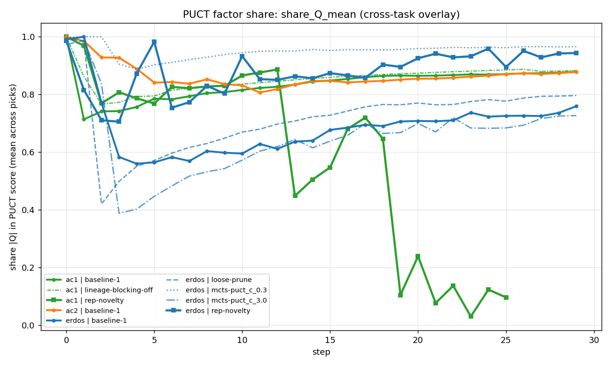
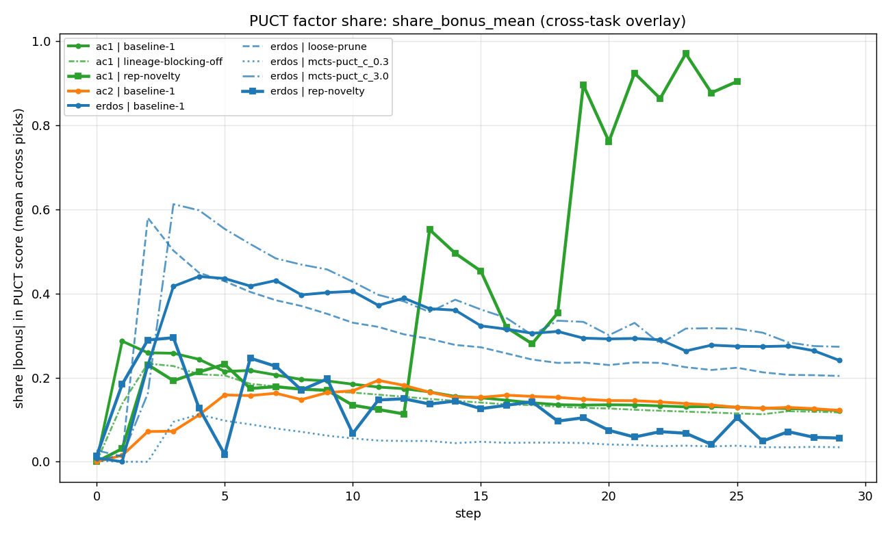
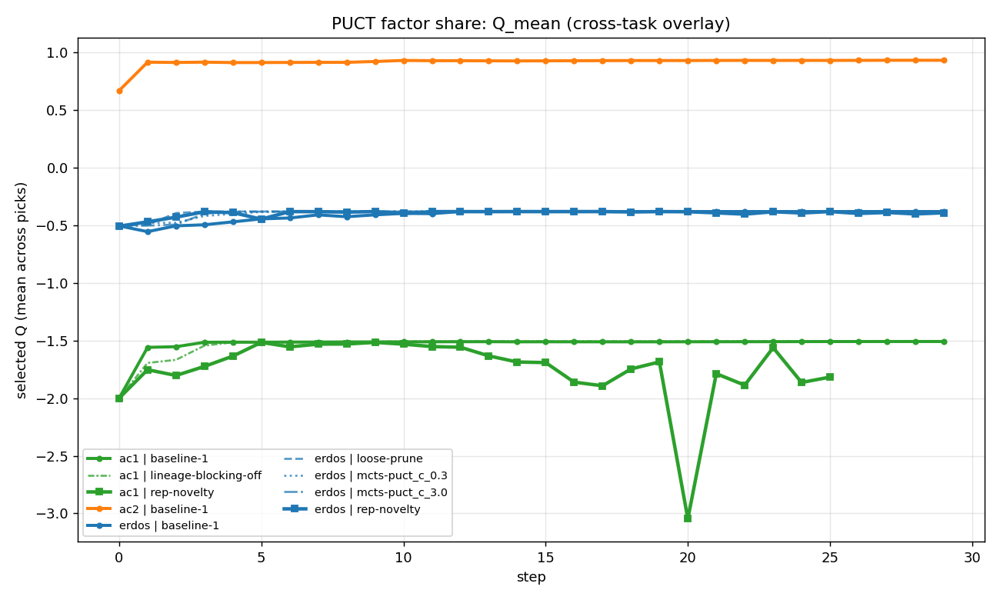
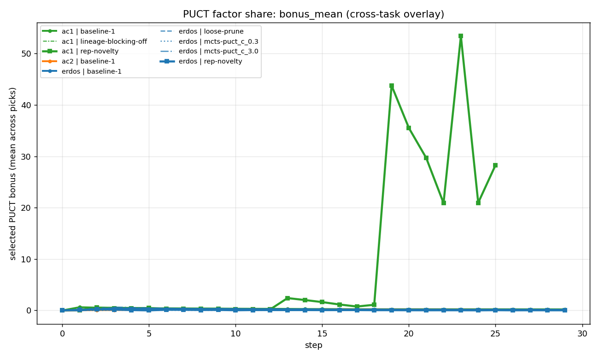

H3 EXPERIMENT
H3 — Q dominates the PUCT score
The PUCT score is
Q + puct_c · scale · P · √(1+T)/(1+n). The structural exploration term shrinks with √T/n while Q grows — by mid-training, Q dominates and PUCT becomes greedy.The decay
| Step | |Q|-share | |bonus|-share |
|---|---|---|
| 0 | 0.99 | 0.01 |
| 10 | 0.85 | 0.15 |
| 30 | 0.76–0.97 (variant-dependent) | 0.03–0.24 |
Evidence




What it means
Implication for new methods. Any added exploration signal must be on a scale that survives standardization against Q — bigger than the structural
√T/n term that PUCT lets decay. Rep-novelty's bonus is scaled by the candidate value range (scale) for exactly this reason.